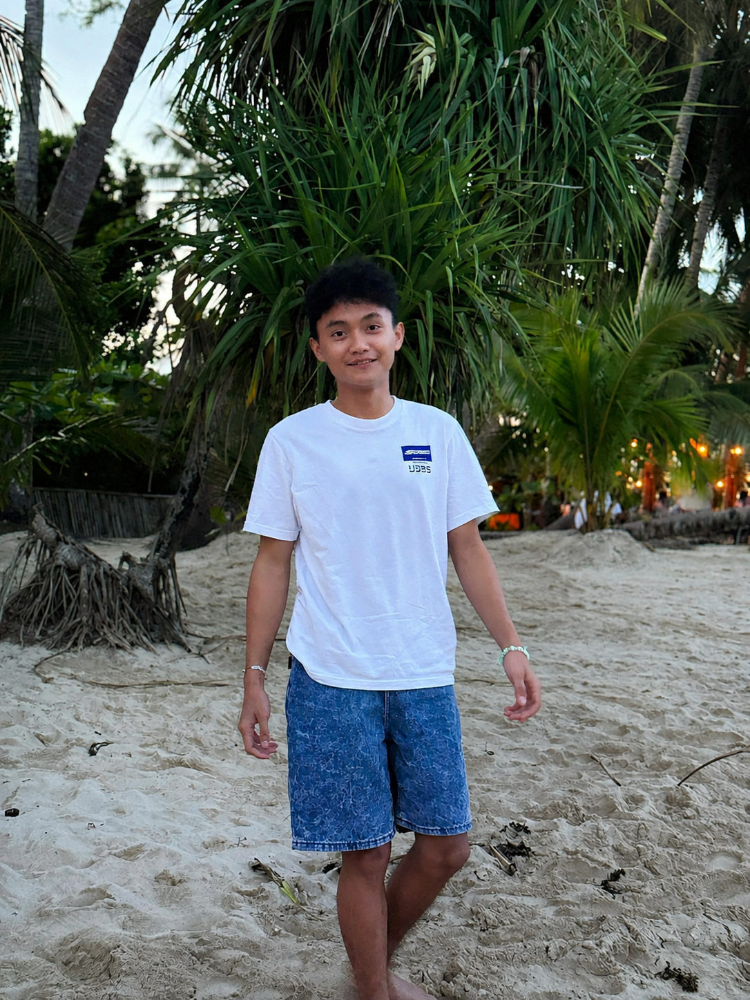

Hello, I'm
Winston A. Tillo
A college student at PHINMA Cagayan de Oro College who enjoys learning new things, exploring technology, playing volleyball, and improving myself every day.
About Me
A little introduction about who I am.
Hello! My name is Winston A. Tillo. I am a college student who enjoys learning new things and improving myself every day. One of my favorite hobbies is playing sports, especially volleyball, because it helps me stay active, healthy, and build teamwork with other people.
I enjoy spending time with my friends and playing sports during my free time. I believe that discipline, hard work, and determination are important in achieving my goals. I am willing to learn from my mistakes and face challenges to become a better person. My goal is to finish my studies, achieve my dreams, and have a successful future.
My Education
Building my knowledge for the future.
Bachelor of Science in Information Technology
PHINMA Cagayan de Oro College
As a BSIT student, I am working toward developing my knowledge, learning new skills, and preparing myself for future opportunities in the world of technology.
My Interests
The things I enjoy and the values I live by.
Volleyball & Sports
I love playing volleyball because it keeps me active and teaches me teamwork, discipline, and determination.
Technology
I enjoy learning new things and developing my knowledge as an Information Technology student.
Friendship & Teamwork
I value spending time with friends, supporting others, and learning how to work together.
Goals & Growth
I believe in hard work, learning from mistakes, facing challenges, and never giving up on my dreams.
My Goals
My goal is to finish my studies, continue improving my skills, become a successful IT professional, help my family, and build a better future through hard work and determination.